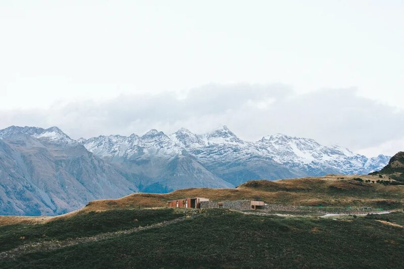
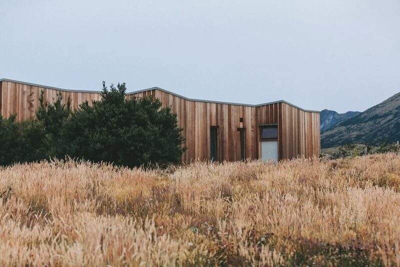
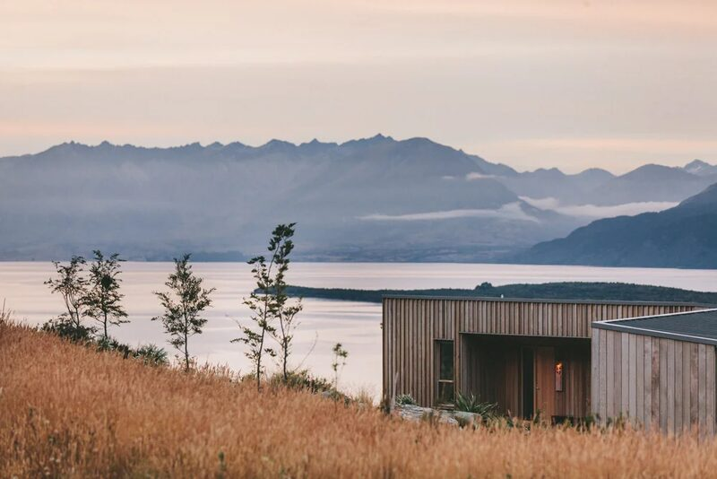
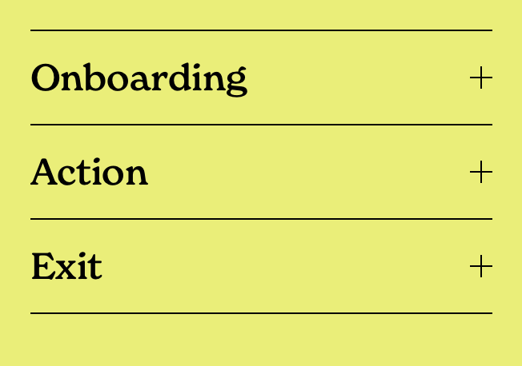
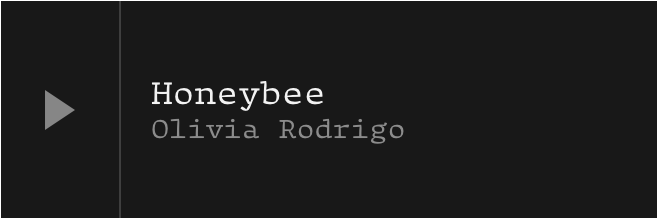
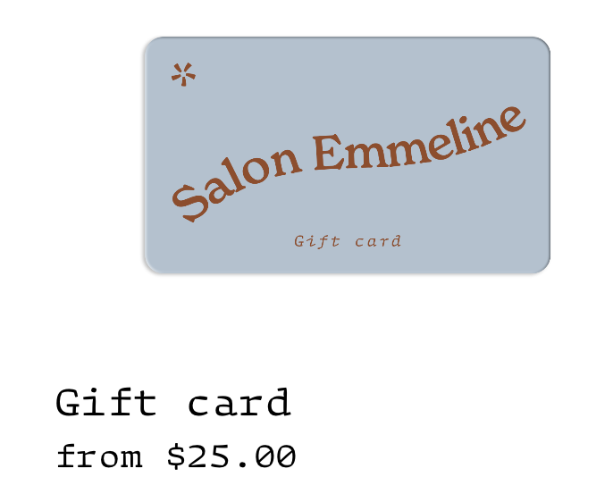
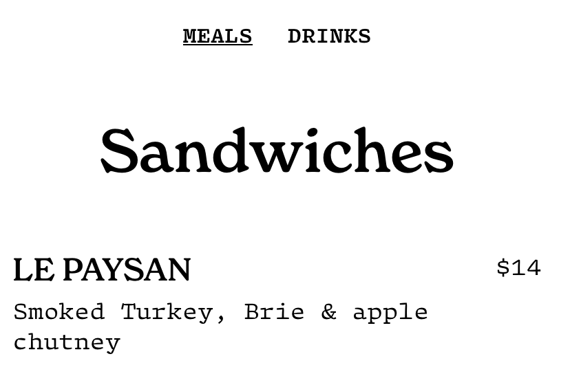

These are all blocks. They can be duplicated.



Squarespace
Block Duplication
- Time:
- Summer 2022
- Role:
- Design handoff, API
- Partners:
- Carrie Lin
Overview
Editing is at the heart of the Squarespace customer experience. However, a native copy-paste feature doesn't exist. Our team tackled this under a project called Block Duplication.
I produced the duplication API, and was heavily involved in the design handoff. Illustrated below in the sandbox are the edge cases I brought up during this process.
Inspiration
“I spent half an hour setting up this menu, and now I need to redo it for every page.”
Without copy-paste, customers had to go back in and recreate each asset from scratch. Duplication would give them a native, intuitive way to build their websites.
What is a block?
A block defines any item on a website — from a piece of text or image, to something more complicated, like an accordion, audio file, product, or menu.




Edge Cases
The Final Product
Find more info here (opens in a new tab).
Outcome
Block Duplication shipped to 3.8 million Squarespace users!
This work also set the team up for section duplication, which is now also available for users.